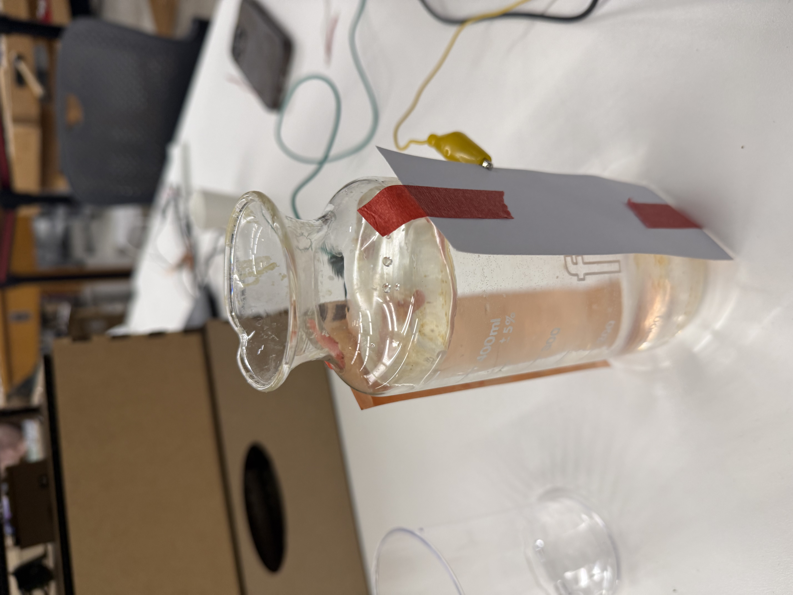
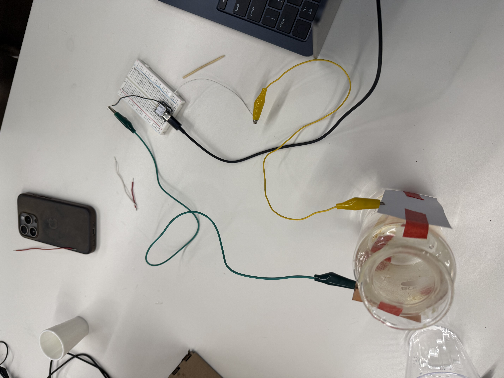
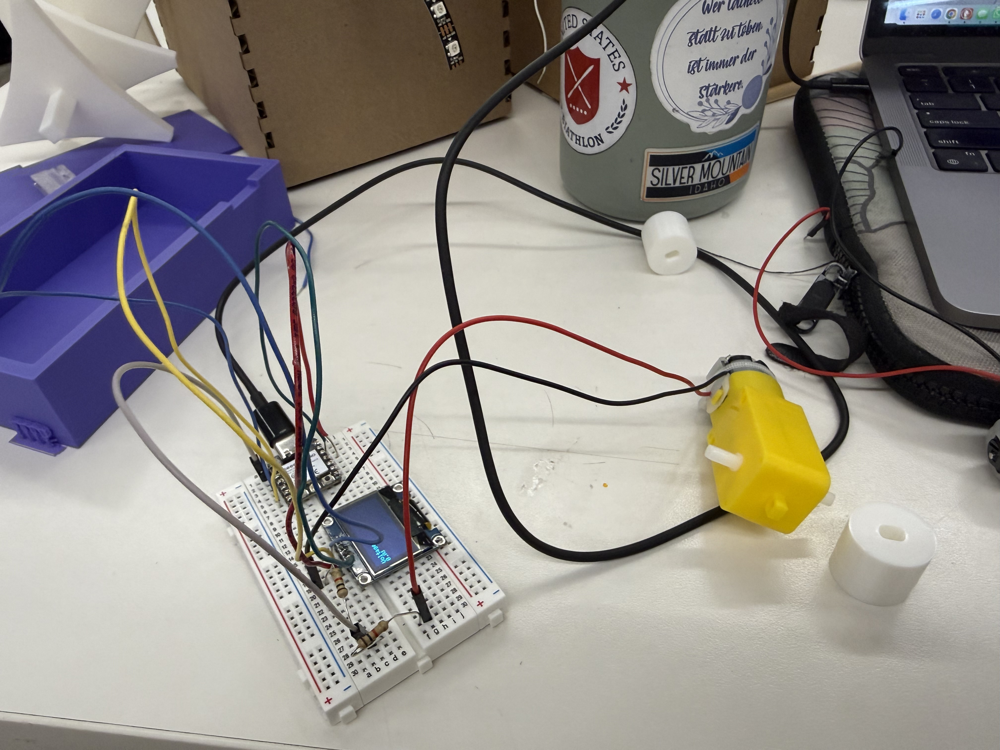

<div class="textcontainer">
<p class="margin"> </p>
<h3>Week 6: Electronic Inputs</h3>
<h4>Assignment 1: Capactive Sensor<h4>
<p class = "margin">
In our group, me and my classmates made a sensor to measure the change in amount of water in the glass. We used the two copper strips to measure the change of current running bewtween the two, and connected this to our microcontroller to read to output. We then used the Equation attached to convert the data into showing the change in water.
</p>
<p></p>
<img width="500" src="./Week 6.jpeg" alt="week7-placeholder-image.jpg">
<p></p>
<p class = "margin">
Below is a video of our sensor in action, with a display of our code. Sadly, I do not have a copy of the code, but Carlos was able to get one on his page (https://carlossa2005.github.io/PS70-Assignments/06_inputs/index.html)
</p>
<video controls style="width: 200%; flex-shrink: 0; max-width: 400px;">
<source src="./Sensor.mp4" type="video/mp4">
Your browser does not support the video tag. <a href="./Sensor.mp4">Download the video</a> instead.
</video>
<h4>Assignment 2: [Use + Calibrate Another Sensor]</h4>
<p class = "margin">
On my own, I started the voltage sensor for my final project. I created a curcuit that senses the voltage being generated by the turning of the DC motor, and converting it to display on the OLED. For this I used two 2000 Ohm resistors (5% tolerance) and connected this to the analog input of the arduino. Below is my Ciruit Diagram (because the website I was using did not have OLED as a component option, it is instead represented by the LED symbol with four wires connecting to it.)
</p>
<img width="500" src="./Circuit2.png" alt="week7-placeholder-image.jpg">
<p class = "margin">
Hardwiring
</p>
<p></p>
<h5>Code</h5>
<p class = "margin">
Code below was taken from Arduino reference pages here (https://docs.arduino.cc/built-in-examples/basics/ReadAnalogVoltage/) and here (https://projecthub.arduino.cc/jobitjoseph/oled-display-interfacing-with-arduino-263cef)
</p>
<p class = "margin">
<pre style = "background-color: cornflowerblue; padding: 20px;">
// the setup routine runs once when you press reset:
void setup() {
// initialize serial communication at 9600 bits per second:
Serial.begin(9600);
}
// the loop routine runs over and over again forever:
void loop() {
// read the input on analog pin 0:
int sensorValue = analogRead(A0);
// Convert the analog reading (which goes from 0 - 1023) to a voltage (0 - 5V):
float voltage = sensorValue * (5.0 / 1023.0);
// print out the value you read:
Serial.println(voltage);
}
{#include <SPI.h>
2
3#include <Wire.h>
4
5#include <Adafruit_GFX.h>
6
7#include <Adafruit_SSD1306.h>
8#define SCREEN_WIDTH 128 // OLED display width, in pixels
9
10#define SCREEN_HEIGHT 64 // OLED display height, in pixels
11// Declaration for SSD1306 display connected using I2C
12
13#define OLED_RESET -1 // Reset pin # (or -1 if sharing Arduino reset pin)
14
15#define SCREEN_ADDRESS 0x3C
16
17Adafruit_SSD1306 display(SCREEN_WIDTH, SCREEN_HEIGHT, &Wire, OLED_RESET);
18// Declaration for SSD1306 display connected using software SPI:
19
20//#define OLED_MOSI 9
21
22//#define OLED_CLK 10
23
24//#define OLED_DC 11
25
26//#define OLED_CS 12
27
28//#define OLED_RESET 13
29
30//Adafruit_SSD1306 display(SCREEN_WIDTH, SCREEN_HEIGHT, OLED_MOSI, OLED_CLK, OLED_DC, OLED_RESET, OLED_CS);
31void setup()
32
33{
34
35 Serial.begin(9600);
36
37 // initialize the OLED object
38
39 if(!display.begin(SSD1306_SWITCHCAPVCC, SCREEN_ADDRESS)) {
40
41 Serial.println(F("SSD1306 allocation failed"));
42
43 for(;;); // Don't proceed, loop forever
44
45 }
46// Uncomment this if you are using SPI
47
48 //if(!display.begin(SSD1306_SWITCHCAPVCC)) {
49
50 // Serial.println(F("SSD1306 allocation failed"));
51
52 // for(;;); // Don't proceed, loop forever
53
54 //}
55// Clear the buffer.
56display.clearDisplay();
57
58 // Display Text
59
60 display.setTextSize(1);
61
62 display.setTextColor(WHITE);
63
64 display.setCursor(0, 28);
65
66 display.println("Hello world!");
67
68 display.display();
}
</p>
</div>